Neurodevelopment
Chapter 5 of 19Introduction
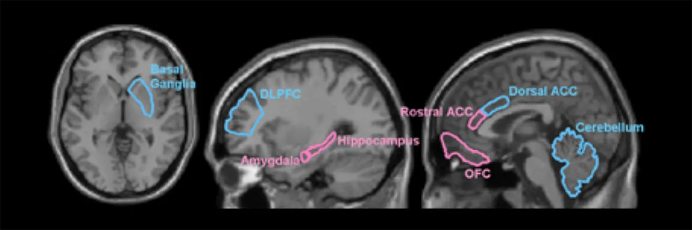
Our nervous system is the body’s command center. It is a well-tuned communication system that transmits signals at the speed of 220 miles/hour to coordinate the body’s organs, movements, and sensations. The nervous system connects our 12 body systems and uses a central processing unit, the brain, to coordinate the proper function of the entire human body. The brain has a unique architecture that is partitioned into different regions, totaling billions of neurons, that if put end to end, would total 37 miles. But how does such a complex system emerge? Will an understanding of how the nervous system is built aid in our ability to treat common and rare brain disorders?
In this chapter, we will learn about the early formation of the central nervous system (CNS). We will discuss cell-to-cell communication and movements that ultimately produce an intricate structure with region-specific functions. These structures continue to develop postnatally and are highly influenced by environmental factors/experience, ultimately shaping how we interact with and perceive the world. Throughout the chapter we will provide examples, using clinical case studies and disease discussions, to understand the critical importance of genetics and environment in shaping normal brain development.
5.1Gastrulation and Formation of the Neural Tube (Neurulation)
By the end of this section, you should be able to
- Describe major structural brain defects and their causes.
- Describe basic principles of gastrulation and neurulation.
Our entire CNS begins from a simple sheet of cells. During development, these cells expand to create the highly patterned and functional units of our brain and spinal cord, giving us the capacity to sense and respond to the environment. In this section, we will introduce you to some of the earliest steps of development. These steps create the foundation for more advanced sculpting of the brain and spinal cord.
Why is brain development important?
CNS abnormalities that cause functional impairment or suffering occur with a frequency of approximately 0.1-0.2% of all live births (Cater et al., 2020). Congenital (those that occur at birth) defects can occur due to environmental toxins (teratogens), as well as other prenatal experiences, such as poor maternal diet, maternal stressors, or genetic mutations. Abnormal brain development that impairs quality of life can also occur postnatally due to the presence or absence of environmental stimuli. For example, a lack of or poor environmental influences postnatally can severely impair cognition years later (Ornoy, 2006). These types of detrimental changes in brain function result because both the prenatal and the postnatal brain have a tremendous ability to sense and respond to the environment by reorganizing its structure, function, or connections. Simply put, the brain is very sensitive to environmental stimulation both pre- and postnatally. The fact that early life experience and brain development can lead to functional deficits well into adulthood underscores a need for research into how the brain develops, how genetics modulates pre-and postnatal development, and how the environment positively or negatively affects overall brain development and function.
How does development begin?
Development of the nervous system requires specific patterning events in the early embryo. These events are summarized in Overview of early neurodevelopment, which we will elaborate on throughout the sections of this chapter. These events organize the fertilized egg and partition specific units for brain development. Thus, to understand brain development in detail, we must first begin by understanding the mechanisms in place that set up the original partitions.
Gastrulation
Development of the nervous system begins with the process of gastrulation, one of the earliest developmental events in the embryo. The goal of gastrulation is to start the subdivision and specialization of cells in the developing embryo. When complete, gastrulation results in the production of 3 primary germ layers. The creation of germ layers can be thought of as the earliest step towards successfully partitioning an organism. Each of the 3 germ layers are made of cells that will give rise to specific tissue types depending on their location.
Gastrulation begins several days after the fertilization of an egg in species like mice and humans. In those intervening days after fertilization (but before gastrulation), the egg undergoes several rounds of cleavage (cell division) events to produce a sphere of cells called the blastocyst. The sphere of cells surrounds a fluid-filled cavity called the blastocoel (step 1 in Gastrulation). Reorganization of the blastula will produce two early layers of cells, the inner cell mass and the outer trophoblast layer (step 2 in Gastrulation). The trophoblast layer will become the mammalian placenta. Through cellular movements, migration, and invagination, the cells of the inner cell mass will produce the 3 germ layers (step 2 in Gastrulation).
Gastrulation begins after the formation of the primitive streak, which is a long groove that forms across the developing embryo. At the anterior region of the primitive streak is the node (De Robertis, 2006). This node represents the organizing center of gastrulation and is the site where invagination of cells begins. Gastrulation step 3 demonstrates an example of early invagination. After the cellular movements are complete, the gastrula contains 3 germ layers: the endoderm, mesoderm, and ectoderm (Gastrulation). They are named based on where they are located within the developing embryo: the endoderm is the innermost layer, the mesoderm is in the middle layer, and the ectoderm is the outermost layer. The CNS is produced from the ectoderm, although all layers communicate with one another to coordinate development.

Neurulation
Completion of gastrulation lays the foundation for a process called neurulation, which will generate the early brain and spinal cord tissues via the formation of a structure called the neural tube (summarized in Neurulation). Of the 3 germ layers, the ectoderm, or outer layer, will generate cells that become neural tissue or epidermis: two vastly different tissues. To make neural tissue (instead of epidermis), a portion of the ectoderm called the neural plate must undergo neural induction.
The neural plate is a single layer of cells located in a small, central region of the ectoderm (Neurulation, step 1). It is induced to become neural tissue by the expression of molecules we call neural inducers. These are secreted factors that direct the surrounding tissues through neurulation (Harland and Gerhart, 1997). One example of a neural inducer is noggin (Valenzuela et al., 1995). Localized expression of noggin induces the neural plate to invaginate (step 2 of Neurulation). Invagination can be described as the process of folding cells inward, to produce a small cavity. In step 2 of Neurulation, the cells of the neural plate that are pushing down into the tissue beneath them are migrating and growing towards cells that are secreting noggin (and other factors). This migration of neural plate cells into the underlying tissue results in the formation of the neural groove (Neurulation, step 2), a center region that is surrounded by indentations that form the neural folds. Ultimately by cellular movements, the two neural folds connect producing a neural tube that sits ventral to the outer epidermis (Neurulation steps 3 and 4). The inner region of the newly closed neural tube develops into the central canal of the spinal cord and what will eventually form the ventricles of the brain.
![Diagrams of the steps of neurulation from the main text, shown as cross-section of developing neural tube. Neural plate starts out as flat section of tissue, dorsal midline, with epidermis on each side. Endoderm is the ventral side of tissue. Mesoderm is in the middle. Notochord is a circular structure just under the neural plate at midline. Over the steps, neural plate invaginates in and closes dorsally to make a tube, with other structures in similar relative places. Step 5 (not in text): Cells within the neural tube are highlighted as the neural precursors that give rise to the central nervous system.](../assets/textbook/img/Image-5.06_Neurulation.webp)
Environment and Bidirectional communication: Neural tube defects and folic acid
Neurulation is a critical step in early brain development and if this process does not occur properly a class of disorders called neural tube defects arise. The most common neural tube defects are the result of abnormal neural tube closure, which can be affected by environmental and genetic influences. These defects fall into different classes based on type and severity. In the severest forms such as anencephaly, the neural tube does not close at the anterior end and causes missing regions of the skull and brain. Other examples include encephalocele, when the brain protrudes through the skull, and hydrocephalus, which is characterized by an accumulation of cerebrospinal fluid in the brain. Spina bifida is one of the most well-known examples of a neural tube defect and occurs when the posterior end of the neural tube does not close fully. Spina bifida can range in severity, causing either a complete opening along the vertebrae of the back or a minor separation in the bones of the vertebrae (Defects of neurulation).
![Left is a diagram of the dorsal view of a neural tube of an unaffected tube and a tube exhibiting spina bifida. The spina bifida tube has an opening at the caudal end of the tube that is absent in the unaffected tube. Right is a lateral view of adult spinal cord showing the variations in severity of spina bifida. In unaffected spine, neural pathways stay inside the spinal cord and vertebrae are in place. Variations of spina bifida shown include: missing vertebrae but nerves in place, missing vertebrae and some nerves looping out from the spinal cord dorsally, missing vertebrae and all nerves looping dorsally outside the spinal cord.](../assets/textbook/img/Image-5.29_Defects-of-neurulation.webp)
Interestingly, the different types of neural tube defects observed occur at the extreme ends of the neural tube (not in the middle) as a result of how the neural tube closes. The neural tube begins closure in the middle and slowly closes on either end. Spina bifida is localized to the posterior regions of the neural tube, while anencephaly, encephalocele, and hydrocephalus occur in the anterior regions of the neural tube.
It is predicted that approximately 70% of neural tube defects occur due to genetic factors. There have been over 240 genes associated with neural tube defects (Harris and Juriloff, 2010), which strongly supports the link between genetic predisposition and neural tube abnormalities. However, genetics do not solely determine the presence of neural tube defects, as a huge proportion of neural tube defects can be prevented with the nutritional supplementation of folic acid in the mother’s diet. Folic acid is a water-soluble B-vitamin and deficiencies in folic acid have been associated with an increased risk of neural tube defects (Wallingford et al., 2013). Many foods including orange juice and some cereal grains are fortified with folic acid. The addition of folic acid to specific food products of general consumption has had an immediate impact on the prevalence of neural tube defects. Despite the efficacy of folic acid supplementation, it is still unclear how folic acid directly prevents neural tube defects.
Summary
Key terms
Congenital, teratogens, gastrulation, germ layers, cleavage, blastocyst, blastocoel, inner cell mass, trophoblast, primitive streak, node, blastopore lip, neurulation, neural tube, neural plate, neural induction/inducers, noggin, neural groove, neural folds, ventricles, anencephaly, encephalocele, hydrocephalus, vertebrae, transplantation assays, Spemann-Mangold organizerReferences
Cater, S. W., Boyd, B. K., & Ghate, S. V. (2020). Abnormalities of the fetal central nervous system: Prenatal US diagnosis with postnatal correlation. RadioGraphics, 40(5), 1458–1472 https://doi.org/10.1148/rg.2020200034.
De Robertis, E. M. (2006). Spemann’s organizer and self-regulation in amphibian embryos. Nature Reviews Molecular Cell Biology, 7(4), 296–302. https://doi.org/10.1038/nrm1855
Harland, R., & Gerhart, J. (1997). Formation and function of Spemann’s organizer. Annual Review of Cell and Developmental Biology, 13(1), 611–667. https://doi.org/10.1146/annurev.cellbio.13.1.611
Harris, M. J., & Juriloff, D. M. (2010). An update to the list of mouse mutants with neural tube closure defects and advances toward a complete genetic perspective of neural tube closure. Birth Defects Research Part A: Clinical and Molecular Teratology, 88(8), 653–669. https://doi.org/10.1002/bdra.20676
Ornoy, A. (2006). Neuroteratogens in man: An overview with special emphasis on the teratogenicity of antiepileptic drugs in pregnancy. Reproductive Toxicology, 22(2), 214–226. https://doi.org/10.1016/j.reprotox.2006.03.014
Spemann, H., & Mangold, H. (1924). Über Induktion von Embryonalanlagen durch Implantation artfremder Organisatoren. Archiv für Mikroskopische Anatomie und Entwicklungsmechanik, 100(3–4), 599–638. https://doi.org/10.1007/BF02108133
Valenzuela, D. M., Economides, A. N., Rojas, E., Lamb, T. M., Nuñez, L., Jones, P., Lp, N. Y., Espinosa, R., Brannan, C. I., & Gilbert, D. J. (1995). Identification of mammalian noggin and its expression in the adult nervous system. Journal of Neuroscience, 15(9) 6077–6084. https://doi.org/10.1523/jneurosci.15-09-06077.1995
Wallingford, J. B., Niswander, L. A., Shaw, G. M., & Finnell, R. H. (2013). The continuing challenge of understanding and preventing neural tube defects. Science, 339(6123), 1222002. https://doi.org/10.1126/science.1222002
Practice The multiple-choice and fill-in-the-blank questions for this section are interactive and live on OpenStax, so they are not carried here: open the book on openstax.org.
5.2Growth and Development of the Early Brain
By the end of this section, you should be able to
- Define major structural regions of the early brain.
- Describe the creation and maintenance of neural stem cells.
- Describe differentiation of neurons and glia.
- Describe radial migration of the cortex.
- Describe tangential migration.
The early maturation of the CNS entails subdividing sections through a process called segmentation. During this time, the brain undergoes massive cellular expansion producing neural stem cells that will ultimately give rise to neurons and glia (not microglia). Here, we will describe the segmented regions of the early brain and the mechanisms that regulate neural stem cell function and differentiation alongside a discussion of the types of migration that organize neurons to their final destination.
Segmentation of the early brain
The enclosed neural tube contains almost all the components needed to produce the brain and spinal cord. The tube itself will now morph into a region-specific structure that includes the forebrain, midbrain, hindbrain, and spinal cord (Early segmentation of the brain). (See Introduction.)
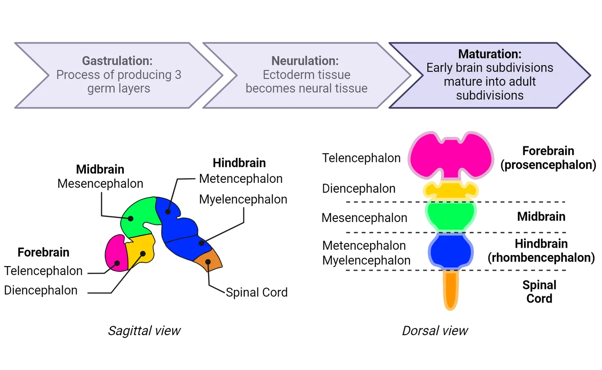
This process is called segmentation (Hirth et al., 1995; Millet et al., 1996; Nomura et al., 1998; Krumlauf and Wilkinson, 2021) and includes the process of bending and folding regions of the neural tube. The anterior region of the neural tube will bend forward with the anterior most region forming the prosencephalon (forebrain) and the mesencephalon (midbrain), which is adjacent to the cephalic flexure. A flexure is a term used to describe a bend or fold. The cephalic flexure is distinguished as a curvature located at the junction between the brainstem and spinal cord. It is a critical anatomical adaptation that helps support the body to walk on two legs, opposed to four like cats or dogs. The body is able to do this by balancing the weight of our heads on top of the spinal cord, while keeping our eyes forward to gather spatial awareness as we walk on two feet.
The cephalic flexure is anterior to the rhombencephalon (hindbrain), which is located in between the cephalic flexure and the cervical flexure, the bend that will divide the hindbrain and spinal cord (Early segmentation of the brain). The prosencephalon is further subdivided into the telencephalon and the diencephalon. The rhombencephalon is divided into the metencephalon and myelencephalon. The telencephalon will produce the cerebral cortex, while the diencephalon will generate the thalamus, and hypothalamus. The midbrain and hindbrain will produce parts of the brainstem, pons, and cerebellum, collectively (see Introduction). Posterior to the hindbrain region, the neural tube becomes the tissue of the spinal cord. These divisions are all specified early in development, even though their full functional maturation will take months (and sometimes years).
Environment and Bidirectional communication: Genetic diseases of development with environmental influence
Disorders that lead to structural damage or malformations which impair lifelong function are the most common forms of congenital brain disorders. While there are a variety of environmental teratogens that can alter brain development, a significant number of congenital brain malformations are associated with a genetic mutation. For many of these disorders, a gene of interest has been assigned or associated with the disease, but how a specific mutation disrupts overall brain development is still a puzzle. These mysteries persist most likely because, in many cases, genes interact with environmental influences to determine their final effect on the brain. For example, holoprosencephaly is a congenital brain disorder characterized by abnormal separation of the forebrain (Weiss et al., 2018). This occurs prenatally and mutations in various genes have been shown to cause holoprosencephaly (Geng and Oliver, 2009). However, the degree of illness is often variable amongst individuals (Holoprosencephaly). Severe forms of the disease exhibit cyclopia (a single eye) and the brain does not divide into two hemispheres whereas some individuals diagnosed with holoprosencephaly can present with semilobar holoprosencephaly, in which the brain has a small separation between each hemisphere (Holoprosencephaly). It is generally accepted that environmental exposures in combination with genetic mutations ultimately dictate the presence and severity of holoprosencephaly. For example, some environmental teratogens such as ethanol are known to exacerbate the phenotypes of holoprosencephaly (Hong and Krauss, 2012). Additional environmental interactions include maternal diabetes and prenatal exposure to specific pharmaceutical drugs (Cohen and Shiota, 2002).
![Top shows diagrams contrasting early segmented neural tube that is typical versus that in holoprosencephaly. The holoprosencephaly tube has less fully formed bilateral protrusions from midline, particularly in the forebrain. Bottom shows several diagrams of a horizonal section of human brain each with varying degrees of holoprosencephaly. Normal has two defined cortical lobes, one on each side. The lobes become less separated and more unified with increasing severity. The most severe shows one cortical lobe centered at midline with no bilateral separation.](../assets/textbook/img/Image-5.27_Holoprosencephaly.webp)
Proliferation and differentiation: how are neurons and glia formed?
This section will cover the generation of neurons and glia in development.
Neural stem cells and proliferation
As the neural tube forms, we see the emergence of a special class of cells that will proliferate (divide) to create numerous daughter cells that go on to become neurons and glia of the CNS, except for microglia which are formed in the peripheral yolk sac. These cells are committed to become nervous system cells and are referred to as neural epithelial cells or neural stem cells. In the very early stages of neural tube formation (Step 1 in Embryonic corgical neurogenesis), these cells divide rapidly to create identical daughter cells, thereby expanding the neural tissue and growing the neural tube. Some of these daughter cells go on to become a type of cell called a radial glial cell (RGC).
RGCs are a class of neural stem cells located in a proliferative region called the ventricular zone, the thin layer of tissue surrounding the fluid-filled central cavity of the neural tube (i.e., the future ventricular system). RGCs have a unique, bipolar shape, shown in Embryonic corgical neurogenesis, where they extend one process medially, to contact the ventricular space, and another laterally, to contract the edge of the developing neural tube (known as the pial surface). Within the ventricular zone, RGCs divide (proliferate). The goal of this expansion is to create enough RGCs to produce the neurons and glia required for a fully formed brain.
RGCs are unique in that they have the ability to self-renew, which means they produce more of themselves through symmetric cell divisions where one cell produces two independent identical cells. RGCs also have the ability to divide asymmetrically, which means they can produce one cell that is identical to themselves, but at the same time produce a different, more committed cell that we call an intermediate progenitor (IP) (Step 2). IPs migrate along the radial processes of the RGCs into the subventricular zone (Step 3 and detailed location on the y-axis) where they will undergo symmetric cell divisions to produce neurons (Step 4 and 5). We call this process of creating new neurons neurogenesis. Later, RGCs will switch towards the development of daughter cells that go on to become astrocytes and oligodendrocytes, processes referred to as gliogenesis (Step 6). Gliogenesis occurs well after neurogenesis and closer to birth, with production of astrocytes occurring first followed by production of oligodendrocytes.

As neurogenesis and gliogenesis progress, the brain, of course, grows. For humans and several other highly intelligent mammals, our brain growth presents an exceptional challenge. In short, we need to fit a lot of brain, particularly a lot of cortex, into a small space, otherwise our heads would be too big for our necks to support. All mammalian species have a cortex, but it differs in size and texture (see Introduction). In smaller mammals such as mice, the cortex is smooth and smaller relative to skull size. However, in higher mammals, the cortex is much larger. It has a surface area the size of a pillowcase, approximately 40 by 62.5 centimeters. This size difference can be attributed to increased proliferation and production of neurons. To accommodate the increase in cell number, the human brain produces cortical folding, which is the formation of gyri and sulci. In rare instances, the human brain lacks the formation of gyri and sulci, this condition causes lissencephaly, or smooth brains. Lissencephaly is associated with intellectual disability.
As the human brain grows during development, we see it go from a relatively smooth structure to one with many sulci and gyri. Brain growth and folding shows how during development the large cortical lobes curl over on top of the lower brain regions, expanding to cover and surround mesencephalic regions. This curling over during development helps explain why many of our subcortical structures (hippocampus, thalamus, basal ganglia, and lateral ventricles) have a curved shape. To get an idea of how brain folding occurs during brain development, take out four sheets of paper. First take one sheet and crumple it tightly. The paper will slightly expand then settle into a crumpled state. Now get the remaining three sheets of paper and crumple all three together. Notice how thicker paper leads to fewer folds. The crumpled pieces will be much larger and harder to fold. Now apply that logic to the growing brain. Thicker cortices fold less and end up with less cortical material hiding below the surface.
![Illustration of human brain viewed laterally from 29 days of embryonic development to birth and then from young child to adult. The brain is seen growing from a single, smooth neural tube to the complex adult brain with sulci and gyri. The main text explains relevant major changes. The cephalic flexure first arises at 33 days embryonic and more thorough curling over of the telencephalon is seen around 52 days. Sulci and gryi gradually emerge day 70-6mo embryonic, but more adult patterns of sulci and gyri are not evident until 9months/birth.](../assets/textbook/img/Image-5.37_Brain-growth-and-folding.webp)
Zika virus infection of neural stem cells
Zika virus is an arbovirus that is transmitted through the bite of the mosquito, Aedes aegypti. The most recent outbreak of Zika virus was in 2016. While the disease is relatively mild or asymptomatic in most individuals, it has been associated with microcephaly or smaller head size in newborns exposed to viral infection during prenatal development (Mlakar et al., 2016). The probability of a fetus to be born with microcephaly after Zika infection of the mother is between 1-13% (Antoniou et al., 2020). Such an association prompted scientists to study the effects of Zika viral infection on neural stem cell function, survival, and differentiation. In 2016, at the height of the Zika virus outbreak, Garcez and colleagues used organoid culture to study the effects of Zika virus on neural stem cell function. Organoids are stem cells that are grown in a culture dish but take on the 3-dimensional structure of an organ (see Introduction). Using this system, it was demonstrated that infection of neural stem cells with Zika virus causes increased cell death and reduced the growth of the organoid (Garcez et al., 2016). These studies confirmed that Zika virus directly infects neural stem cells and hinders their development. They also demonstrate how proper neural stem cell function is critical for building a healthy, functional brain.
Differentiation of neurons and glia
As mentioned previously, asymmetric cell divisions produce neurons first, and later in development they produce glial cells. Thus, the same neural stem cell has the capacity to produce neurons and glia, two vastly different cell types (this figure).
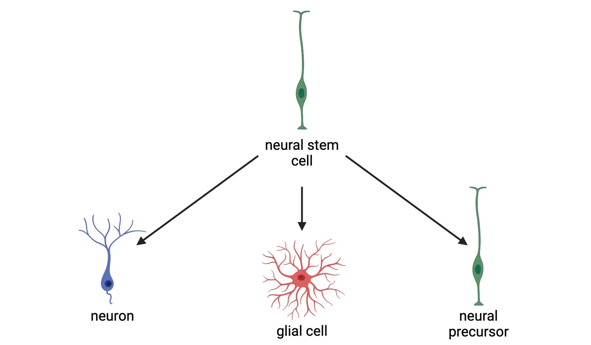
This capacity to make more than 1 cell type is referred to as multipotency. The process by which the daughter cells mature in their final functional form (neuronal or glial) is called differentiation. Differentiation of neurons and glia are separated by time. Their formation is regulated by the promotion or repression of gene expression. For example, the expression of proneural genes promotes the differentiation of daughter cells into neurons. During this time, the expression of proglial genes are inhibited. Thus, proneural genes have the capacity to suppress gliogenic signals (Bertrand and Guillemot, 2002). Later, proneural genes are repressed and proglial genes turn on, allowing daughter cells to mature into glia.
But what causes these genes to turn on and off? Expression of proneural or proglial genes, and therefore differentiation, is highly influenced by neighboring cells in the environment. Cells usually interact and communicate by secreting soluble signals that bind receptors expressed on the cell surface, or by cell contact, which allows cell-surface proteins on each cell to bind each other directly. Either kind of interaction (soluble, cell contact) can initiate intracellular signaling that drives changes in expression of the neural/glial driving genes. As the brain matures, these environmental signals change, different genes are turned on and off, and the balance between neuro- and glio-genesis therefore shifts.
Neuronal Migration Patterns
Neurogenesis occurs whilst the neural tube is expanding into multiple layers. A key step in neurogenesis is for these new cells to migrate to the right spot, where they can eventually become part of functional circuits. The neural tube contains a mixture of neural stem cells and IPs. Dividing IPs are produced in a sub-region called the subventricular zone, from an asymmetrically dividing population of RGCs. IPs will eventually produce neurons that travel along the two outstretched processes of the RGC. Newly born neurons migrate along the glial projections of RGCs towards the pial surface (Step 3 in Embryonic corgical neurogenesis). As development proceeds, subsequent waves of neurons will migrate past the existing newly differentiated neurons. This process results in the neural tube becoming partitioned into different layers as it expands. In the mammalian cortex, the remnants of this process can be seen in the distinct cell layers that contain different subtypes of neurons (Rakic, 1974). Not all neurons migrate along RGCs. Inhibitory GABAergic interneurons migrate tangentially from zones called ganglionic eminences. There are 3 ganglionic eminences from which many different neurons arise and undergo tangential migration. Radial versus tangengial migration diagrams tangential versus radial migration, showing how the two differ.
![Top shows a coronal section of developing brain, with large ventricular space encased dorsally by cortical tissue. Arrows show migration direction from ventricle to cortical surface. A detailed pop-out shows a section of cortical tissue with neural stem cell bodies in the proliferative zone, just above the ventricular space. Neural stem cell radial process that extends from the cell body to the cortical surface and a migrating new neuron follows the process outwards/up. Bottom shows the same coronal section but with migration direction from ganglionic eminences in the midline, ventral to the ventricle, around the ventricle to the developing cortex. A detailed pop-out shows a section of cortical tissue where migrating new neurons enter above the proliferative zone and migrate towards the ventricle and towards the cortical surface.](../assets/textbook/img/Image-5.43_Radial-versus-tangential-migration.webp)
Developing layers of the cerebral cortex
The mammalian adult cortex is composed of 6 layers with a unique composition of cell types. The image on the left side of Cortical layer formation is a drawing by Ramon y Cajal, showing how these layers look in a cross-section of an adult brain where neurons have been stained a dark color. Over the course of time, scientists have asked, how are the layers of the cortex formed? Which layers (1-6) are formed first? In other words, can experiments be designed to determine which neurons from each layer are born first? The right side of Cortical layer formation shows one classic experiment that was used this way.
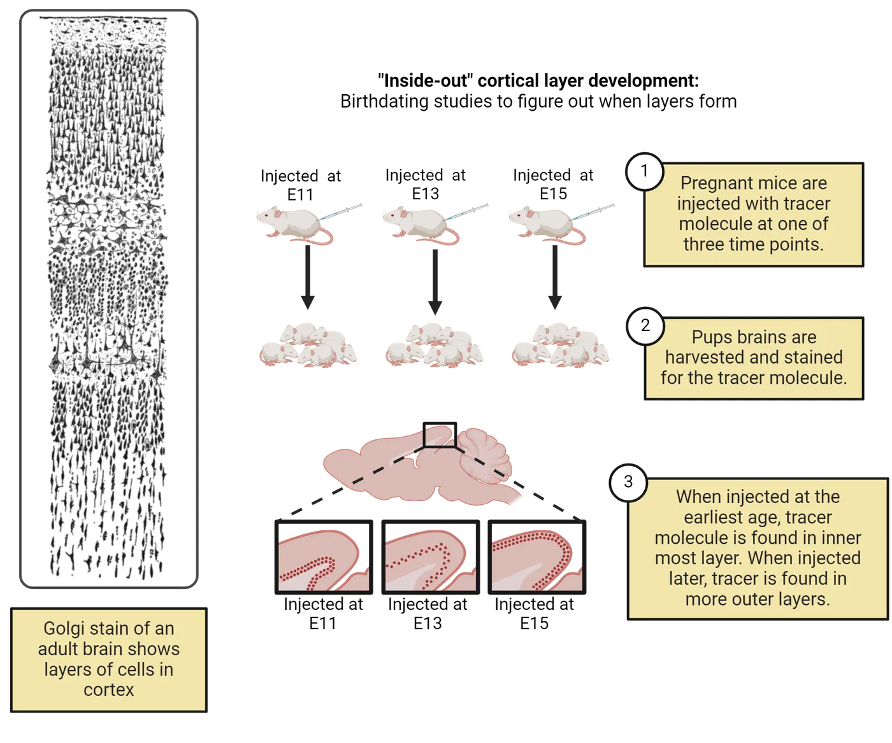
To determine which neurons are born first and in what location, a tracer molecule was injected into pregnant female mice at different embryonic stages of pregnancy (E11, E13, or E15) (step 1 of Cortical layer formation). The tracer molecule labeled the neurons produced (via cell division) right around the time of its injection in developing pups. The pups were then euthanized after birth and researchers looked in their brains to see where the marker-labeled neurons could be found (step 2 of Cortical layer formation). The early injection of the tracer molecule at E11 was associated with tracer-labeled neurons in the innermost layer of the cortex (Layer 6) while injection at E13 and E15 were associated with tracer-labeled neurons in the middle layers and more superficial layers, respectively (step 3 of Cortical layer formation). Hence, the earliest born neurons are present in the innermost layers and later born neurons are in the superficial layers, producing an inside-out development of the cortex.
Summary
Brain segmentation is controlled at the level of gene expression and can be subject to disease through both abnormal gene expression and environmental exposures. The cells of the brain are produced from neural stem cells that occupy the neural tube and differentiate into neurons and glia. Some of these cells, such as glutamatergic cortical neurons, produce a layered structure using an inside-out pattern. These mechanisms produce a fundamental unit that will have tremendous plasticity to sense and respond to the environment during both subsequent prenatal and postnatal development.
Key terms
neural stem cells, segmentation, flexure, self-renew, neurogenesis, gliogenesis, gyri, sulci, lissencephaly, multipotency, differentiation, proneural, proglial, gliogenic, ganglionic eminences, neural crest cellsReferences
Antoniou, E., Orovou, E., Sarella, A., Iliadou, M., Rigas, N., Palaska, E., Iatrakis, G., & Dagla, M. (2020). Zika virus and the risk of developing microcephaly in infants: A systematic review. International Journal of Environmental Research and Public Health, 17(11), 3806. https://doi.org/10.3390/ijerph17113806
Bertrand, N., Castro, D. S., & Guillemot, F. (2002). Proneural genes and the specification of neural cell types. Nature Reviews Neuroscience, 3(7), 517–530. https://doi.org/10.1038/nrn874
Cohen, M. M., & Shiota, K. (2002). Teratogenesis of holoprosencephaly. American Journal of Medical Genetics, 109(1), 1–15. https://doi.org/10.1002/ajmg.10258
Edward, D. P., & Kaufman, L. M. (2003). Anatomy, development, and physiology of the visual system. Pediatric Clinics of North America, 50(1), 1–23. https://doi.org/10.1016/s0031-3955(02)00132-3
Garcez, P. P., Loiola, E. C., Madeiro da Costa, R., Higa, L. M., Trindade, P., Delvecchio, R., & Rehen, S. K. (2016). Zika virus impairs growth in human neurospheres and brain organoids. Science, 352(6287), 816-818. https://doi.org/10.1126/science.aaf6116
Geng, X., & Oliver, G. (2009). Pathogenesis of holoprosencephaly. Journal of Clinical Investigation, 119(6), 1403–1413. https://doi.org/10.1172/JCI38937
Hirth, F., Therianos, S., Loop, T., Gehring, W. J., Reichert, H., & Furukubo-Tokunaga, K. (1995). Developmental defects in brain segmentation caused by mutations of the homeobox genes orthodenticle and empty spiracles in Drosophila. Neuron, 15(4), 769–778. https://doi.org/10.1016/0896-6273(95)90169-8
Hong, M., & Krauss, R. S. (2012). Cdon mutation and fetal ethanol exposure synergize to produce midline signaling defects and holoprosencephaly spectrum disorders in mice. PLoS Genetics, 8(10), e1002999. https://doi.org/10.1371/journal.pgen.1002999
Krumlauf, R., & Wilkinson, D. G. (2021). Segmentation and patterning of the vertebrate hindbrain. Development, 148(15), dev186460. https://doi.org/10.1242/DEV.186460
Millet, S., Bloch-Gallego, E., Simeone, A., & Alvarado-Mallart, R. M. (1996). The caudal limit of Otx2 gene expression as a marker of the midbrain/hindbrain boundary: a study using in situ hybridisation and chick/quail homotopic grafts. Development, 122(12), 3785-3797. https://doi.org/10.1242/dev.122.12.3785
Mlakar, J., Korva, M., Tul, N., Popović, M., Poljšak-Prijatelj, M., Mraz, J., & Avšič Županc, T. (2016). Zika virus associated with microcephaly. New England Journal of Medicine, 374(10), 951-958. https://doi.org/10.1056/NEJMoa1600651
Nomura, T., Kawakami, A., & Fujisawa, H. (1998). Correlation between tectum formation and expression of two PAX family genes, PAX7 and PAX6, in avian brains. Development Growth & Difference, 40(5), 485–495. https://doi.org/10.1046/j.1440-169X.1998.t01-3-00003.x
Rakic, P. (1974). Neurons in rhesus monkey visual cortex: systematic relation between time of origin and eventual disposition. Science, 183(4123), 425–427. https://doi.org/10.1126/science.183.4123.425
Weiss, K., Kruszka, P. S., Levey, E., & Muenke, M. (2018). Holoprosencephaly from conception to adulthood. American Journal of Medical Genetics Part C: Seminars in Medical Genetics, 178, 122–127. https://doi.org/10.1002/ajmg.c.31624
Practice The multiple-choice and fill-in-the-blank questions for this section are interactive and live on OpenStax, so they are not carried here: open the book on openstax.org.
5.3Synapse Formation and Maturation
By the end of this section, you should be able to
- Explain neurite outgrowth and the structural components of a growth cone.
- Describe polyneuronal innervation and experience related innervation modifications.
The creation of neurons and glia is only the first step in creating a functional brain. For neurons to function in meaningful ways, they have to connect to each other. Making (and keeping) these connections requires several steps. Here, we will discuss the formation of the growing axon (neurite) and major influences guiding final contact and synapse formation. We will end by describing polyneuronal innervation, our first window of opportunity to observe the potential for synaptic plasticity.
Communication by electrical impulse
The anatomist Santiago Ramón y Cajal was the first to describe fibers radiating from individual neurons (Cajal, 1995). He postulated that neurons were separate entities and used long fibers and connections to communicate. How the brain communicates through synapses was previously discussed in Introduction. Here we will provide a short review of this process because it is integral to the formation of synaptic connections early in development. Neurons communicate with each other via the synapse which can be seen in Reminder of synaptic transmission.
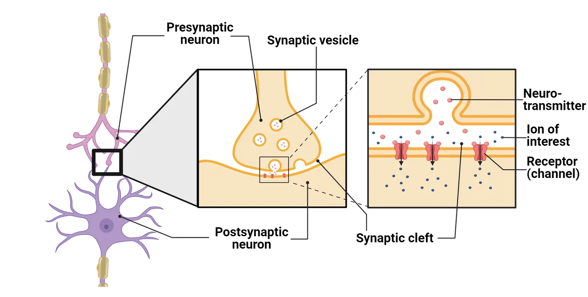
The presynaptic neuron (sending the signal) is in close proximity with the postsynaptic neuron (receiving the signal) and can use signaling molecules and neurotransmitters to either increase or decrease the probability that the postsynaptic neuron fires an action potential. This communication occurs at the synaptic cleft (Reminder of synaptic transmission). Complex mechanisms are required to ensure that the correct presynaptic neuron pairs with the appropriate postsynaptic neuron/tissue during development. Neurons extend and grow their axon using multiple cues and once they encounter their partner, they will test their match using temporary junctions, cell signaling and adhesion molecules, combined with electrical activity. Such signals, if positive, will then promote formation of a mature synapse.
During development, neurons extend a specialized structure from the tip of a growing axon or dendrite. This structure was first described by Ramon y Cajal and was coined the growth cone (Growth cones). Growth cones are dynamic, in that they sense and respond to the environment in search of a target tissue to innervate (connect to via a synapse). Growth cones change shape by extending outward a leading edge (Growth cones), which interacts with the environment. The leading edge of the growth cone appears as a hand with fingertips. The outstretched fingertips are called filopodia (plural). Each filopodium (singular) samples the environment for attractive and repulsive signals that help to determine the direction of growth. In between each filopodium is a flat structure called the lamellipodium (Growth cones). Growth cones express various molecules on their surface that interact with the environment. Therefore, two unique growth cones may respond differently to the same environment.
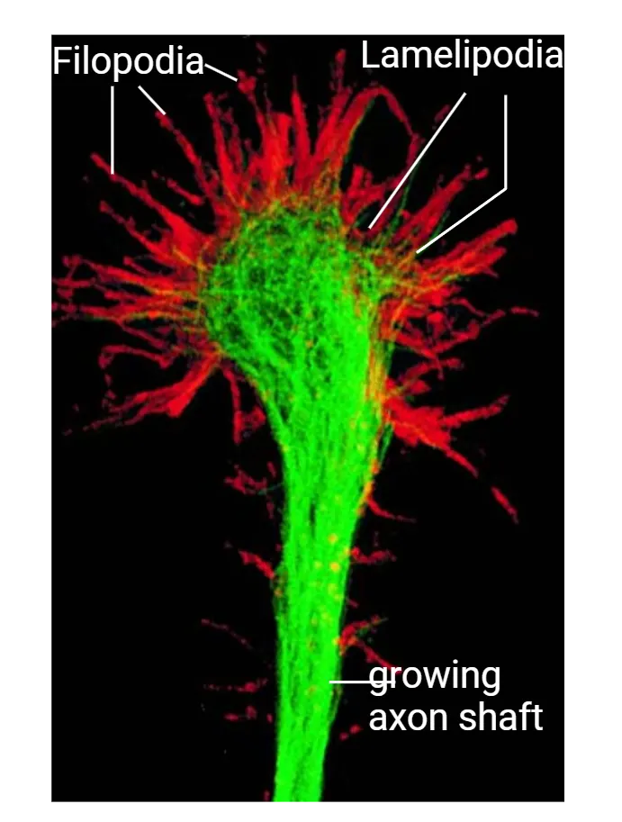
The growth cone is dynamic, and when it meets attractive cues, a structural protein inside the budding growth cone called actin facilitates changes in the direction of the growth cone. Actin subunits can come together in a process called polymerization to move the growth cone. Actin filaments are primarily located in the filopodia.If a repulsive signal is detected, in contrast, actin subunits detach from each other, which is commonly referred to as depolymerization. Actin subunits are essential for growth cone movements, but the axon itself is not made of actin. It is produced from a more rigid protein called tubulin. Tubulin subunits come together at the opposite end of the leading edge of the growth cone to elongate the axon.
Types of receptors expressed on the growth cone
There are several different classes of molecules expressed on the surface of a growth cone. Signals guiding the growth cone shows three of these major classes.
![A diagram showing a filopodium extending into extracellular space. Actin filaments are polymerizing within the filopodium, helping to push the leading edge downward. Receptors are present on the filopodium for chemorepulsive and chemoattractive soluble cues, which are being secreted by other cells. Integrins are transmembrane proteins in the filopodium that are interacting with extracellular matrix structures in the extracellular environment. Cell adhesion molecules protrude from the filopodium and interact with matching cell adhesion molecules on a neighboring cell. The leading edge of the filopodium is turning towards the chemoattractive cues, the other cell expressing cell adhesion molecules and the side where integrins are bound to extracellular matrix.](../assets/textbook/img/Image-5.39_Signals-guiding-the-grown-cone.webp)
Cell adhesion molecules (CAMs) such as neural cell adhesion molecule (NCAM) bind to other CAMs on neighboring cells. These molecules can bind to each other in a process called homophilic binding (bind to the same receptor on another cell) or can bind to other CAMs through heterophilic binding (binding to a different receptor on another cell). CAMs are unique from calcium dependent cell adhesion molecules (cadherins) because cadherins require calcium for an interaction and bind via homophilic binding. Cadherins are similar to CAMs because they are receptors present on adjacent cells which interact. Both CAMs and cadherins are unique from a third class of membrane bound receptors called integrins. Integrins bind and interact with components of the extracellular matrix. These components include laminin, fibronectin, and collagen.
Additional cues can be received through ephrins, semaphorins, and netrin. Ephrins bind to Eph receptors while semaphorins bind to plexin or neuropilin receptors. Netrins are secreted factors that bind to the Unc-5/DCC receptor. Semaphorins are mostly inhibitory but under some circumstances can present attractive signals to the growing axon. There are two classes of ephrins, A and B, class A ephrins are anchored into the membrane and class B are transmembrane receptors that have an intracellular and extracellular domain. In vertebrates, netrin binds to the receptor DCC, which is expressed on the growth cone. The interaction between DCC and netrin is an attractive signal for the growth cone. Interestingly, netrin can also bind to the UNC5 receptor and when it does, it provides a repulsive cue. Thus, netrin can provide both attractive and repulsive cues.
Synaptogenesis
Ultimately, the growth cone is directed by those attractive and repulsive signals to a putative target cell to form a mature synapse. The mature synapse has basic structural components that facilitate neuronal activity. The mature synapse contains vesicles of neurotransmitters, ionic channels (calcium channels), components to release neurotransmitters, a synaptic cleft, and a postsynaptic density (PSD) (Reminder of synaptic transmission). These are all features that develop as a result of the pre- and postsynaptic cells interacting to help each other mature. When the presynaptic cell first meets the postsynaptic target, the synapse has immature characteristics, exemplified in Immature v. mature synapses.
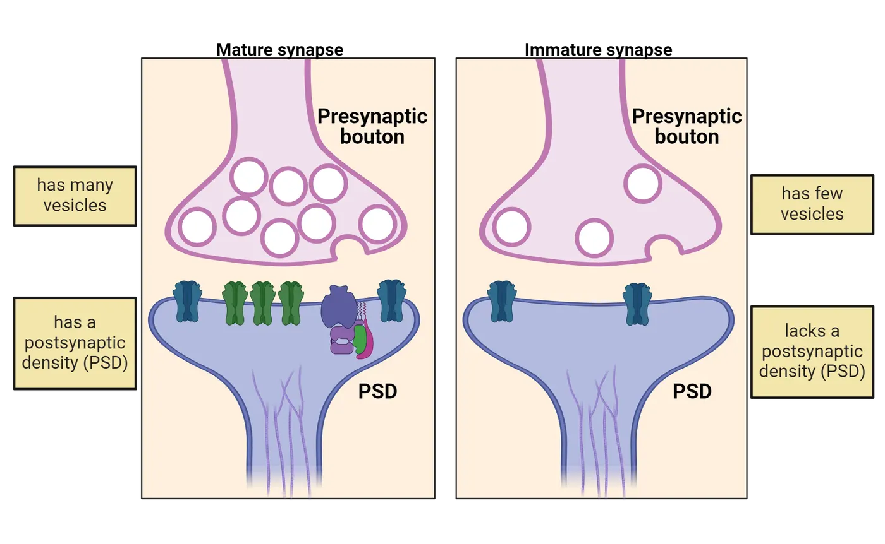
There are two major classes of synapses: electrical and chemical (see Introduction). Chemical synapses communicate through the release of neurotransmitters, which are located in vesicles within the presynaptic neuron. The early immature chemical synapse lacks a PSD and has only very few vesicles in the presynaptic neuron. This immature chemical synapse has the ability to signal via neurotransmitter release, though it is not as robust as a mature synapse will eventually be (Immature v. mature synapses). Rudimentary neurotransmitter release is required for chemical synapse maturation. Electrical synapses are fewer in number relative to chemical synapses and function through gap junctions that allow the electrical current to move from one cell to the next. Recent studies have shown that the components of an electrical synapse (i.e. gap junctions) are required for the development of chemical synapses (Todd et al., 2010). Thus, there is evidence that neurons first form transient electrical synapses before chemical synapses develop.
Developing a synapse entails 3 main steps. The growing axon must 1) detect a postsynaptic target and defasciculate, 2) form temporary contact with the target cells, and 3) undergo matching between the neurotransmitters of the presynaptic cell with the receptors on the target postsynaptic cell. During axon outgrowth, like-minded axons, those with similar growth trajectories, form bundles called fascicles (Stoeckli and Landmesser, 1995). Therefore, when an axon recognizes a potential postsynaptic match, the axon must undergo defasciculation. Defasciculation is when the axon breaks away from the bundle of axons to encounter its target cell. After detachment, the axon will undergo a matchmaking process that relies on cell adhesion. Cell adhesion is a process of connecting to neighboring cells in the environment using cell surface receptors. Cell contacts between the pre and postsynaptic neuron hold the two cells together long enough to initiate synaptogenesis. Subsequent signaling between the two cells ensures that the presynaptic cell synthesizes, packages, and releases an appropriate neurotransmitter that the postsynaptic cell can respond to via expression of appropriate receptors in its PSD.
Neuronal survival and cell death
The developing brain undergoes significant expansion of neural stem cells, which are required for the development of neurons and glia. Interestingly, the developing brain initially produces too many neurons, meaning that the number of cells produced is more than what is needed for adult function. How does the brain compensate for this overproduction of neurons? As it turns out, the developing brain undergoes a process called programmed cell death, or apoptosis. Through apoptosis, excess neurons die, and the developing brain is refined.
Neuronal survival is regulated by multiple mechanisms, one of which is the size of the target tissue which a neuron will innervate. In 1909, Marian Lydia Shorey first demonstrated that there was a correlation between target tissue size and the number of surviving neurons (Shorey, 1909). Removal of the budding limb from chick embryos led to a decrease in the total number of neurons innervating the tissue whereas adding an extra limb tissue increased the total number of neurons. Subsequent experiments by Viktor Hamburger (1934) later revealed that neurons underwent cell death after the target tissue was removed (Hamburger, 1934). Tissue size and neuronal survival in development shows an example of this kind of experiment and the resulting loss of motor neurons in the lumbar spine of developing chicks.
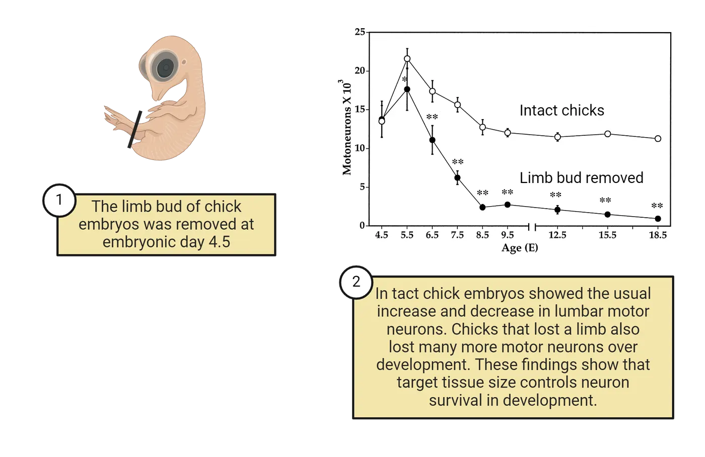
These studies show that neuronal survival is not a random process and is influenced by the ability of tissues to form connections. How might the embryo decide which neurons die and which should survive? Neuronal survival is mediated by a class of molecules called neurotrophins that bind to a family of cell surface receptors called Trk receptors. Neurons that have inadequate signaling between neurotrophins and Trk receptors ultimately undergo apoptosis. Neurons have to compete with each other for access to these neurotrophins (Neurotrophin and cell survival). Tissues producing less neurotrophins will support the survival of fewer neurons. This competition will also favor the survival of neurons that start to make better connections with sources of neurotrophin. In the chick limb bud removal experiments, the loss of the limb bud tissue removed a major source of neurotrophins, causing motor neurons headed towards that tissue to die off while others that found more neurotrophin-abundant targets in other tissues survived. This selection is one of the reasons we refer to this step as part of nervous system refinement. It is not random which neurons die and which survive, but rather driven by the connections the neurons are starting to form.
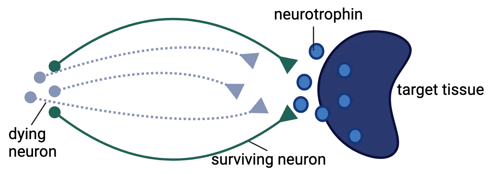
Synapse refinement
Early prenatal brain development combines coordinated control of various signals to produce an elaborate foundational unit capable of precise control of the human body. However, it is important to note that this unit represents only a foundation and is subject to refinement. We discussed refinement above in terms of which neurons survive. Synapse refinement is also a prominent feature of the developing nervous system. Synapse refinement is the process by which the early synapses are modified or eliminated because of specific signaling events.
The neuromuscular junction (NMJ) is a well-defined example of synapse refinement after birth (Bishop et al., 2004). We have learned a great deal about the capacity for refinement by studying the NMJ. The NMJ represents the synapse between the axon of a motor neuron and a muscle fiber (Introduction). Muscle fibers are regulated by a single motor neuron in adults, but it has been established that in newborn rats, muscle fibers are innervated by a minimum of 2 different motor neurons. This type of innervation is called polyneuronal innervation. After birth, motor neuron innervations are reduced, but not because of neuronal cell death. Rather, the branches are eliminated or refined to target only a single muscle fiber (Muscle innervation development) (Brown et al., 1976).
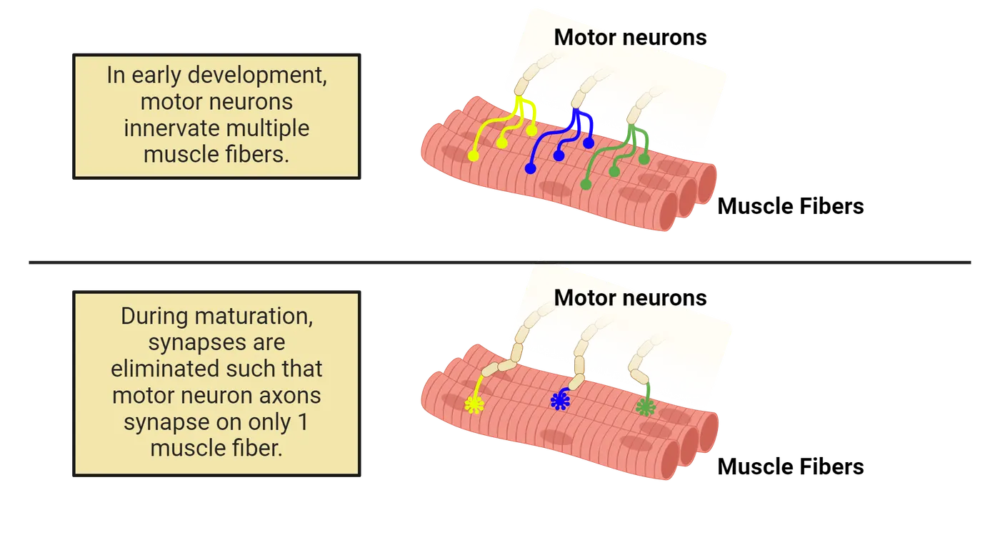
The process of transitioning from polyneuronal innervation to mono-neuronal innervation is dependent on electrical activity and competition between two innervating neurons. It is critical for the precise recruitment of the motor unit during force and contraction generation (Lee, 2020). Should it be dysfunctional, more than one neuron would control the activity of a muscle cell. This phenomenon is not limited to the NMJ and has been demonstrated in the CNS. For example, Purkinje cells of the cerebellum that are innervated by climbing fiber inputs of the inferior olive are poly-innervated at birth, but by 2 weeks of age, the synapses are refined to a single innervation per Purkinje cell (Mariani and Changeux, 1981).
Synapse refinement in the CNS
We have discussed synapse refinement at the NMJ as a model for how synaptic connections are reorganized postnatally. Similar processes are occurring in the CNS, but what drives this process in the CNS? It turns out that, similar to how neurons must compete for neurotrophin survival cues, competition is also critical to synapse survival.In short, synapses that get used more get strengthened and those that are not used are lost. The most effective synapses are those that have a strong association between presynaptic neurotransmitter release and postsynaptic firing. Presynaptic neurons that fire in unison are especially effective at competing as a team to maintain strong connections that cause the postsynaptic neuron to fire. Synaptic correlation shows a representation of this principle. Early in development, a postsynaptic neuron may receive multiple inputs (# 1), some of which fire together (# 2) and others of which do not (# 3). The correlated inputs are much more likely to cause the postsynaptic cell to fire, because they are working together. As development proceeds, those correlated connections get stronger (# 5) and uncorrelated ones get weaker.
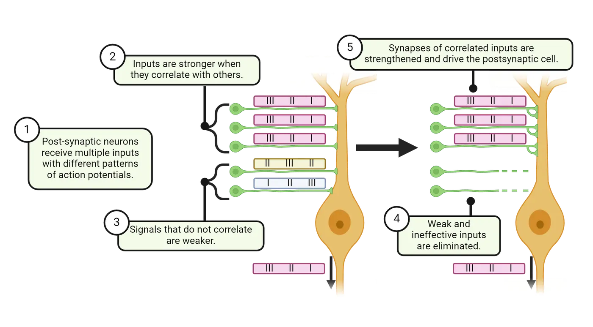
What happens to those “weaker” synapses? Rival synapses that cannot fire synchronously with a neuron or a target cell and receive little input eventually lose synaptic connection and are eliminated through pruning (# 4 in Synaptic correlation). Why do we need to eliminate synapses? Consider it like how tree roots compete for water in the rainforest. To survive and strengthen, the roots that branch out towards areas which fortify the livelihood of the tree will grow stronger, and those that fail in this sense weaken and die. Synapse numbers tend to peak during childhood in humans, with pruning then extending from late childhood through adolescence (Synapse formation and pruning).
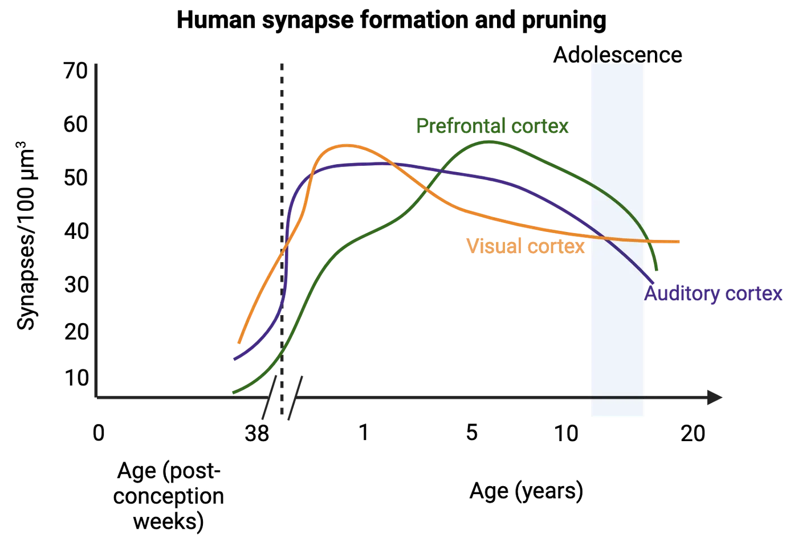
Pruning requires a balance; too little or too much can reduce the efficiency of brain function. Aberrant pruning can result in cognitive disorders due to faulty wiring in early life stages (Johnston, 2004; Sakai, 2020). For example, patients diagnosed with schizophrenia, a debilitating psychiatric illness with a myriad of hallucinogenic symptoms, show fewer synapses (over pruning) in brain scans relative to healthy individuals (see Introduction). The loss of synaptic connections is pronounced in the prefrontal cortex, a region where pruning peaks during adolescence, an active period of synapse elimination, coinciding with the onset of the disorder. In contrast, disorders such as autism have shown an excess in connections, suggesting failure to eliminate synapses. Findings like these suggest that CNS disorders can result from excessive or insufficient pruning during childhood and adolescence.
Myelination and plasticity
Myelin is a sheath that surrounds axons to promote the rate of electrical signaling. It is made of proteins and lipids and deposition of myelin on axons begins 1-2 months before birth. This makes myelination one of the later steps in nervous system development (Primate neurodevelopment).
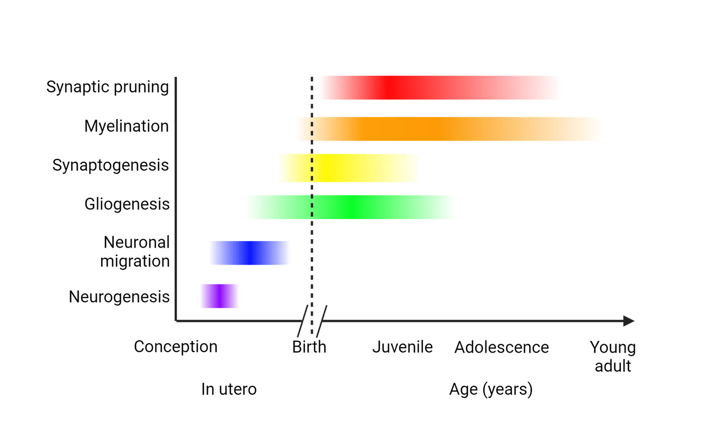
Myelin is produced by oligodendrocytes in the CNS and Schwann cells in the peripheral nervous system (see Introduction). Both of these are glial cells produced during gliogenesis. Myelination does not occur all at once, but rather in a progression. Generally, axons in the peripheral nervous system are myelinated first, followed by spinal cord axons and finally axons in the brain. Myelination in the developing brain shows MRI images of the brain during the first year of life, showing rapid accumulation of myelin (pseudocolored red) in the brain. This first year is when the peak of myelination occurs in humans. A parallel in the first month of life in rodents can also be seen in the bottom panel of Myelination in the developing brain, where myelin has been stained dark in brains from rats aged postnatal day 7 to 35.
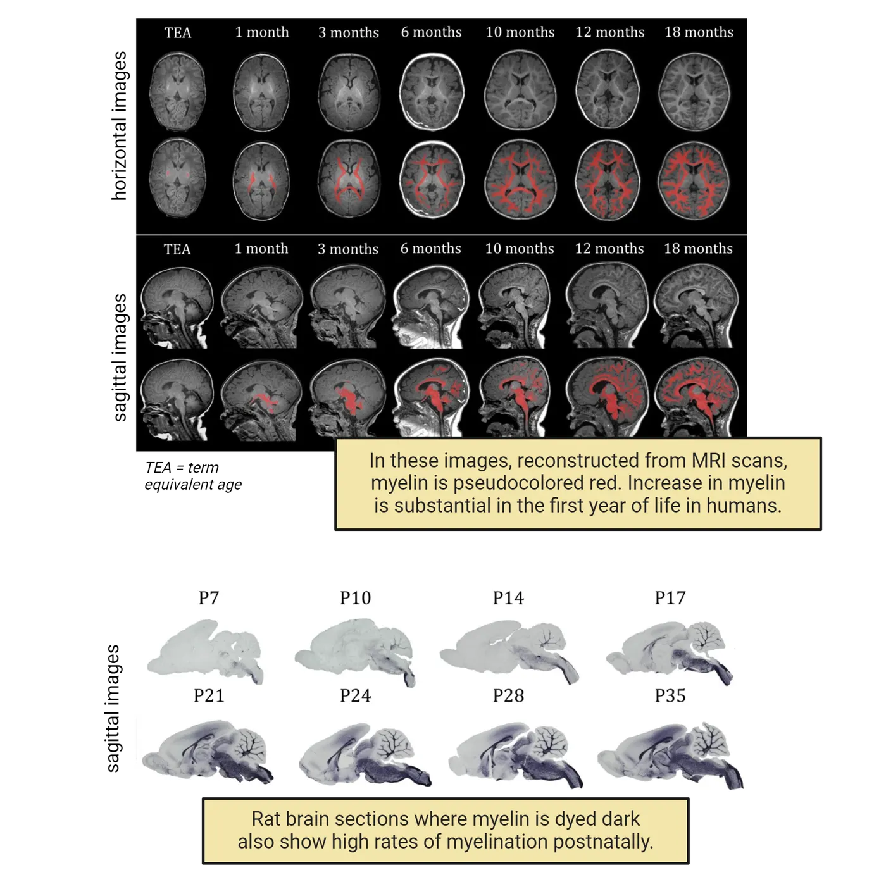
Though the first year is when most myelination happens in humans, myelination continues in the forebrain well into childhood and adolescence and accounts for some degree of plasticity during these time periods. Interestingly, extensive piano playing is associated with increased myelination (Fields, 2005). In adolescence, increased risk-taking behavior can be the result of incomplete development of the forebrain, which includes reduced white matter (myelination) development (Beckman, 2004). But how does the environment affect myelin deposition? For the CNS, the answer probably lies in how sensitive developing oligodendrocytes are to environmental stimuli. Oligodendrocytes are glial cells of the CNS that produce and deposit myelin. For example, when rats were raised in an enriching environment, with toys and other rats to play with, the number of oligodendrocytes in their cortex actually increased (Szeligo and Leblond, 1977). Consistent with the increase in the number of oligodendrocytes, an enriching environment is also associated with an increase in the number of myelinated axons (Juraska, 1988). These studies were performed in rats, but there is also evidence for white matter developmental plasticity in humans. For example, neglect during childhood has been shown to decrease white matter by 17% in the corpus callosum (Teicher et al., 2004). We will discuss more about experience-dependent plasticity in neurodevelopment, but these examples help to highlight how development is not a simple series of steps but a constant interplay between developing systems and their environment.
Summary
A differentiating neuron undergoes significant changes which produce a growth cone that migrates through a milieu of signaling to find a target tissue. Upon selection, additional cues are provided to promote the formation of a mature synapse. Specific signaling events regulate maturation of the synapse as well as neuronal survival prior to birth, but after birth the nervous system continues to undergo refinement of synapses. In the subsequent sections, we will focus more on critical periods and provide examples of disorders that arise as a consequence of changes in our environment.
Key terms
Synapse, presynaptic neuron, postsynaptic neuron, neurotransmitters, actin, polymerization, depolymerization, cell adhesion molecules, calcium dependent cell adhesion molecules, integrins, fascicles, ephrins, semaphorins, netrin, ipsilateral, commissural, fascicles, defasciculation, apoptosis, neurotrophins, Trk receptors, refinement, dorsal root ganglia, neuromuscular junction, motor neuron, muscle fiber, polyneuronal innervation, pruning, myelinationReferences
Beckman, M. (2004). Crime, culpability, and the adolescent brain. Science, 305(5684), 596–599. https://doi.org/10.1126/science.305.5684.596
Bishop, D. L., Misgeld, T., Walsh, M. K., Gan, W.-B., & Lichtman, J. W. (2004). Axon branch removal at developing synapses by axosome shedding. Neuron, 44(4), 651–661. https://doi.org/10.1016/j.neuron.2004.10.026
Brown, M. C., Jansen, J. K., & Van Essen, D. (1976). Polyneuronal innervation of skeletal muscle in new-born rats and its elimination during maturation. Journal of Physiology, 261(2), 387–422. https://doi.org/10.1113/jphysiol.1976.sp011565
Cajal, S. R. (1995). Histology of the nervous system of man and vertebrates. History of Neuroscience (Oxford University Press).
Fields, R. D. (2005). Myelination: an overlooked mechanism of synaptic plasticity? The Neuroscientist, 11(6), 528-531. https://doi.org/10.1177/1073858405282304
Hamburger, V. (1934). The effects of wing bud extirpation on the development of the central nervous system in chick embryos. Journal of Experimental Zoology, 68(3), 449-494. https://doi.org/10.1002/jez.1400680305
Johnston, M. V. (2004). Clinical disorders of brain plasticity. Brain and Development, 26(2), 73–80. https://doi.org/10.1016/S0387-7604(03)00102-5
Juraska, J. M., & Kopcik, J. R. (1988). Sex and environmental influences on the size and ultrastructure of the rat corpus callosum. Brain Research, 450(1), 1–8. https://doi.org/10.1016/0006-8993(88)91538-7
Lee, Y. I. (2020). Developmental neuromuscular synapse elimination: Activity-dependence and potential downstream effector mechanisms. Neuroscience Letters, 718, 134724. https://doi.org/10.1016/j.neulet.2019.134724
Mariani, J., & Changeux, J. P. (1981). Ontogenesis of olivocerebellar relationships. II. Spontaneous activity of inferior olivary neurons and climbing fiber-mediated activity of cerebellar Purkinje cells in developing rats. Journal of Neuroscience, 1(7), 703–709. https://doi.org/10.1523/jneurosci.01-07-00703.1981
Sakai, J. (2020). Core Concept: How synaptic pruning shapes neural wiring during development and, possibly, in disease. Proceedings of the National Academy of Sciences USA, 117(28), 16096–16099. https://doi.org/10.1073/pnas.2010281117
Shorey, M. L. (1909). The effect of the destruction of peripheral areas on the differentiation of the neuroblasts... University of Chicago.
Stoeckli, E. T., & Landmesser, L. T. (1995). Axonin-1, Nr-CAM, and Ng-CAM play different roles in the in vivo guidance of chick commissural neurons. Neuron, 14(6), 1165–1179. https://doi.org/10.1016/0896-6273(95)90264-3
Szeligo, F., & Leblond, C. P. (1977). Response of the three main types of glial cells of cortex and corpus callosum in rats handled during suckling or exposed to enriched control and impoverished environments following weaning. Journal of Comparative Neurology, 172(2), 247–63.
Teicher, M. H., Dumont, N. L., Ito, Y., Vaituzis, C., Giedd, J. N., & Andersen, S. L. (2004). Childhood neglect is associated with reduced corpus callosum area. Biological Psychiatry, 56(2), 80–85. https://doi.org/10.1016/j.biopsych.2004.03.016
Todd, K. L., Kristan, W. B., Jr., & French, K. A. (2010). Gap junction expression is required for normal chemical synapse formation. The Journal of Neuroscience, 30(45), 15277–15285. https://doi.org/10.1523/JNEUROSCI.2331-10.2010
Practice The multiple-choice and fill-in-the-blank questions for this section are interactive and live on OpenStax, so they are not carried here: open the book on openstax.org.
5.4Experience Dependent Plasticity
By the end of this section, you should be able to
- Describe and provide examples of experience-dependent plasticity during development.
- Describe effects of environmental toxins and early experience during critical periods.
Early embryonic development provides the foundational unit of a brain with immature connections, but sensory cues can dramatically alter how brain maturation occurs. These sensory cues play a significant role in how neurons differentiate, how dendrites sprout, how neurons form and maintain synaptic connections, and how the brain produces final neural networks. At the early stages of development, our brain has a high degree of neural plasticity. Neural plasticity is the ability to adapt and reorganize in response to environmental stimuli. In fact, during certain periods of development called critical periods, environmental stimuli can lead to long-term positive or negative effects.
The brain's plasticity for refinement during critical periods can be either beneficial or detrimental. As an example of a beneficial experience, in rodent studies, enriched environments improve function of several brain regions when compared to animals homed in standard cages. These “enriched” living spaces provide settings that encourage exploration, cognitive engagement, social interaction, and physical activity in animals, enhancing plasticity. Rats raised in enriched environments show enhanced plasticity in several brain regions, even including sensory areas like the visual cortex, which shows an increase in connections and stronger circuits. Detrimental effects of negative environmental experiences are also, of course, possible. Monkeys and cats raised in restricted visual conditions, such as suturing an eye shut at a critical period of visual cortex growth or rearing in conditions without light, suffer permanent impairments in their visual abilities (Tian and Copenhagen, 2001; Vistamehr and Tian, 2004; Levelt and Hübener, 2012; Berry and Nedivi, 2016). These impairments include overcompensation in the plasticity to the eye receiving stimuli. Unfortunately, as we reach adulthood, the brain’s ability to reshape and grow new connections declines. At the same time, other factors can hasten the decline of cognitive plasticity, including environmental factors, hormones, and neurodegenerative diseases (Voss et al., 2017).
Embryonic and fetal period
Developmental sensitivity to defects defines critical periods in prenatal development. These periods are timepoints in prenatal development when specific organ systems of the embryo or fetus are particularly susceptible to environmental stimuli, meaning that negative stimuli can result in structural or functional brain malformations that impair function lifelong. CNS development begins embryonically at 3 weeks post-fertilization. The embryonic period lasts until 10 weeks, and encompasses neurulation, a critical period we have previously discussed as it relates to neural tube formation and closure. CNS development continues from 10 weeks to 38 weeks, which is defined as the period of the fetus.
![A chart showing timelines of major neurodevelopmental steps. Most relevant details are where major steps fall in phases of in utero, postnatal infant toddler, postnatal child-adult. In utero: closure of neural tube, proliferation of neurons, neuron migration, differentiation and growth to axons and dendrites, production of synapses and neurotransmitters, development of intercellular signaling systems. Both in utero and postnatal infant-toddler: glial cells and myelination, development of the hippocampus. Postnatal infant-toddler: transient cortical structure replaced by cortical plate, rapid pre-frontal development.Postnatal child-adult: axon and synapses pruning.](../assets/textbook/img/Image-5.19_Developmental-sensitivity-to-defects.webp)
The pioneering work of Charles Stockard and Hans Spemann has shown that there are stages that are particularly sensitive to environmental exposure and/or manipulation (Stockard, 1921; De Robertis, 2009). Stockard is known for his work with fish embryos, in which he found that introducing chemical agents at a specific stage would create what he called “monsters”. Stockard's drawings shows a drawing by Stockard of one of these fish after exposure to a teratogen during the critical embryonic period. This damage was permanent, and when replicated at other stages of development, there was essentially no similar defect seen, suggesting that there are specific prenatal stages that are very sensitive to teratogens. The reason for this susceptibility is that the fetus is experiencing rapid growth in size, weight, and muscle at early stages. Below we detail two common environmental exposures during fetal development that result in abnormal nervous system development, causing lifelong impairment in function.
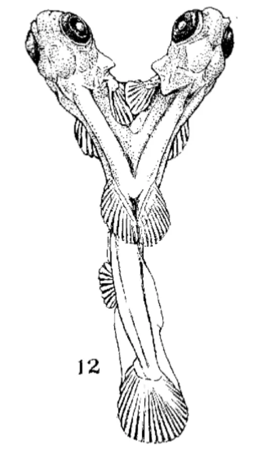
Fetal alcohol syndrome
Exposure to alcohol during the fetal period can result in fetal alcohol syndrome (FAD) and fetal alcohol spectrum disorders (FASD). Alcohol is a teratogen, and its effects can lead to growth retardation, abnormal brain development, intellectual disability, and craniofacial abnormalities, which include a narrow forehead, flat midface, narrow eyelid openings, shortened nose, a long upper lip, and an absent philtrum (Fetal alcohol syndrome; Sulik et al., 1981).
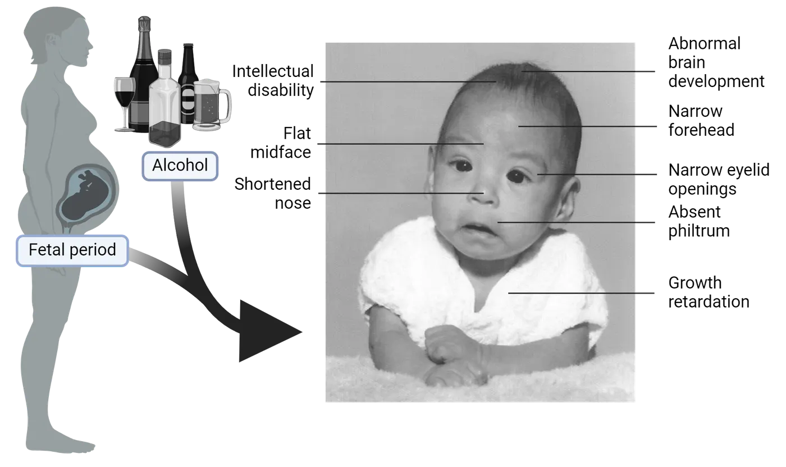
FASD is the most common non-genetic form of intellectual disability, with broad symptoms, including poor cognition and behavioral phenotypes (Denny et al., 2017). The effects of FAD on growth and development can be observed in Fetal alcohol syndrome. While the term “fetal” in FAD/FASD implies the effects of alcohol are focused only on the fetal period, alcohol can also have a negative impact earlier in pregnancy. When mice had a brief exposure to alcohol during embryonic development, they presented with severe facial malformations (Sulik et al., 1981). This period of embryonic development in mice is equivalent to approximately the third week of human gestation, a time point when many women aren’t aware of their pregnancy (Sulik et al., 1981). This is why it is recommended that individuals planning to become pregnant refrain from alcohol consumption.
Retinoic acid as a teratogen
Retinoic acid (RA) is a steroid hormone produced from vitamin A. Upon production, RA has several developmental responsibilities and can bind to RA receptors that together bind to DNA and change the genes that are expressed inside of a cell. Controlled levels of RA are essential for development, but excess intake of vitamin A or RA by pregnant women can lead to birth defects. These birth defects include microcephaly, spina bifida, hydrocephalus, and exencephaly. Importantly, drugs that contain forms of RA are frequently used to treat dermatological conditions including acne. Exposure to these drugs during pregnancy can predispose the fetus to CNS defects, as well as craniofacial abnormalities and shortened limbs (Berenguer et al., 2021).
2: Perinatal period
The perinatal period encompasses the time frame from childbirth up to 24 months. During this time, the CNS possesses tremendous plasticity, defined as the ability to remodel or reorganize based on experience. Such plasticity is very robust from birth to 3 years and gives rise to developmental critical periods. While the early brain maintains a high degree of plasticity, it is important to note that plasticity is maintained into adulthood, although it does decrease as we age. As discussed previously, significant synapse refinement occurs in the form of loss of poly-innervation and pruning during this period of development. Below, we will discuss several examples of how long-term brain function can be shaped by experiences during this perinatal period.
Perinatal brain development and parental care
One of the most tragic consequences of the perinatal critical period for CNS development is the long-term and severe impact that neglect or abuse during this time can have. Brain symptoms of neglect highlights some of the major brain regions where disrupted growth is evident years after childhood abuse/neglect. They include regions important for emotion (amygdala), memory (hippocampus), and executive function (prefrontal cortex). These kinds of extreme examples show how experience in early life can disrupt the structure of the brain long-term.
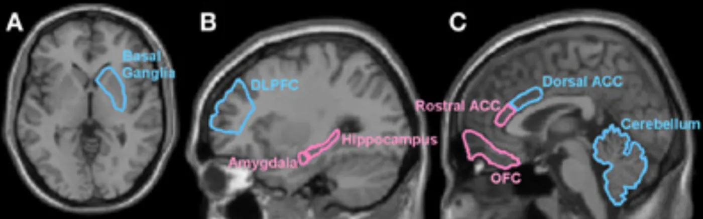
Neuroscience in the lab: Uncovering mechanisms of parental care effects on brain development
The importance of perinatal care experiences on brain development cannot be underemphasized. But how do these nurturing events (or their absence) in infancy and childhood affect our adult behavior? Studies in rats have provided some insight into how early life care can affect adult behaviors by shaping the stress response. Maternal rats provide nurturing to their offspring through licking and grooming. Rat moms are not all equal and some provide more licking and grooming than others, even in the controlled conditions of the lab. Meaney and Szyf (2022) took advantage of this natural variation to study the consequences of maternal behavior on the long-term development of their pups. Remarkably, they found that adult rats that received more grooming attention as pups responded better to stressful events later in life (Liu et al., 1997) (see Introduction). Specifically, they secreted less stress hormones in response to a stressor created by the researchers. The key to their reduced hormonal response was a long-lasting increase in stress hormone receptors. A high number of these receptors inhibits the excessive production of stress hormones leading to reduced hormonal stress response. This example shows one mechanism by which perinatal experience can lead to life-long changes that impact brain function, in this case the response to stress.
Perinatal critical period for language development
Language development is particularly sensitive to input during the perinatal and juvenile time period. An infamous story of neglect, given the pseudonym “Genie”, has helped further understand the importance of language development during critical periods (Salus and Curtiss, 1979; Rymer, 1993). The unfortunate events this child endured were extreme deprivation of sensory experience. Genie was confined to a small room, isolated, and tied to a potty seat, every day up to 13 years of age. The child was severely deprived from receiving any sensory stimuli, to the point where her father prohibited that anyone talk to Genie, instead only barking or growling at her was allowed. For many years after she was found, Genie received help among many therapists to aid in her development. Through extensive therapy, she was able to learn basic words and word combinations, but she still lacked the ability to speak in full sentences or understand the concept of assigning different words to the same meaning.
Genie’s story is anecdotal evidence as to the importance of critical periods during language development and is somewhat complicated by the severity of her deficits in other aspects of cognitive function. More definitive evidence indicating the importance of a critical period for language development has been established through the study of the birdsong. Oscine songbirds use the birdsong to attract their mates. In order to develop the appropriate song, juvenile birds must be exposed to their song by an adult male, memorize the song, and then recapitulate it. While birdsong is not the same as human language, it has some similarities as a form of vocal learning. If a bird is not exposed to the correct song within the first 2 months of hatching or exposed to a different song during this critical period, the bird will not develop the appropriate song and can fail to attract a mate (Doupe and Kuhl, 1999).
Oscine birds and humans share the need for environmental exposure for proper language development. Children develop proper syntax within the first year of life (Friedmann and Rusou, 2015) and it is well-established that learning a language happens spontaneously among children, but not in adults. Adults mostly must explicitly study a new language to learn it and even then, grammar, syntax and pronunciation are typically not as proficient as those who learned before adolescence. This early childhood critical period for language acquisition likely relies on the higher synaptic plasticity in language centers of the brain during this phase of development, when synapses are being established and refined.
Perinatal critical period in visual development
Perinatal sensory experience is required for the development of the visual system at several levels. One prominent example of this is development of ocular dominance in the primary visual cortex (called V1 for short). At birth, the layers of the primary visual cortex are innervated by axons from both eyes. However, by adulthood through visual stimulation, the innervations are remodeled and segregated between layers to produce ocular dominance columns (Stryker and Harris, 1986; Levelt and Hübener, 2012; Berry and Nedivi, 2016). Within an ocular dominance column, the cells respond preferentially to light being shown in one eye over the other. This process of refinement to create preference for input from one eye requires visual input, as was first demonstrated by studies in cats.
David Hubel and Torsten Wiesel performed the first key studies to establish critical periods of vision development (Wiesel and Hubel, 1963; Hubel and Wiesel, 1970; Levelt and Hübener, 2012; Berry and Nedivi, 2016). To study how exposure to light influences formation of cortical cell preference for responding to input from one eye or the other, Hubel and Wiesel used the simple model of suturing shut a single eye of feline subjects at different times. They measured ocular preference of cortical cells by recording from individual cells in the cat visual cortex while shining a light on one eye or the other. Ocular dominance critical period describes their findings.
![Diagrams of ocular deprivation experiments with line graphs to represent number of cells found to be response to right eye, left or a mix. In normal adult cats, cells in the visual cortex (V1) are a mix of those that respond to light in the left eye, right eye or a bit of both. If one eye is prevented from seeing light for just a few weeks early in life, V1 cells permanently shift to respond only to the other eye. If one eye is prevented from seeing light in adulthood, V1 cells still respond to light in that eye.](../assets/textbook/img/Image-5.33_Ocular-dominance-critical-period.webp)
In an adult cat that never had an eye sutured shut (i.e., a normal cat), they found a mixture of visual cortical cells that responded preferentially to the right eye, left eye, or a bit of both. However, if a cat experienced just 3 to 4 days of visual deprivation when they were a kitten (perinatally), almost all their visual cortical cells responded only to light from the unsutured eye (Hubel and Wiesel, 1970). The formerly sutured eye was effectively blind because it did not stimulate any cortical cells. Importantly, if the eye was sutured shut during adulthood, there was no effect (Ocular dominance critical period), effectively confirming a critical period for vision development. The first few weeks of life are a critical period for this part of visual development because this is when inputs to the visual cortex are forming synapses on V1 cortical cells. Cortical cells end up only connected to inputs deriving from the open eye because of a lack of competition from the axons in the sutured eye. Opening the eye later can’t fix that as the critical period for synapse formation has passed.
The significance of visual stimulation and critical periods has been further substantiated by a famous case study in Oliver Sacks’ renowned publication (1985). There he described a human patient by the surname Fergal, who was born blind and received surgery to regain vision after 50 years without it. Despite the success of regaining vision, Fergal lacked the early experiences necessary for synaptic reorganization and proper vision development (Sacks, 1985). This resulted in an influx of stimuli, as his other senses were heightened. As Sacks (1985) describes, “There were no visual memories to support a perception; there was no world of experience and meaning awaiting him. He saw, but what he saw had no coherence. His retina and optic nerve were active, transmitting impulses, but his brain could make no sense of them.” A second example of sensory critical periods and intervention includes the usage of cochlear implants (see Introduction). The efficacy of cochlear implants is widely affected by the age of the patient. For example, the efficacy associated with cochlear implants in children at a young age, with shorter periods of auditory deprivation, is much higher than those with prolonged auditory deprivation (Pisoni et al. 1999).
Plasticity during adolescence
Adolescence refers to the stage of development in between childhood and adulthood. Thus far, we have discussed robust examples of plasticity during infancy and early development. However, the adolescent brain exhibits tremendous neural development, which makes it highly plastic and susceptible to environmental influence. Adolescence is particularly characterized by refinement in connectivity between major brain regions. For example, the connections between the frontal lobe and the amygdala are subject to extensive experience dependent refinement during adolescence. The prefrontal cortex (PFC) is responsible for higher order function and decision making called executive function and the amygdala regulates fear, aggression, and emotion. Adolescent decision making is also influenced by the immaturity of the reward centers in the brain, which include the nucleus accumbens (Spear, 2000), which contains dopaminergic input. The relative immaturity of these 3 brain regions during adolescence leads to more impulsive, reward based, and risk like behaviors relative to adults (Ernst, 2014). It also underlies their enhanced vulnerability/plasticity during adolescence. Studies have shown that chronic stress and psychological distress can have brain region specific impacts during adolescence.For example, abnormal development of the PFC can affect working memory, cognitive flexibility, and self-control.
Adolescence is also a unique critical period for the effects of substance misuse on specific regions of the brain. For instance, substance misuse that occurs during early adolescence, around ages 14-16, is associated with reduction in the volume of frontal cortex gray matter, whereas misuse in childhood selectively impacts the hippocampal gray matter volume (Larsen & Luna, 2018). Such differences can be explained by the different time points in development where growth is more prevalent for each of these two brain regions.
Summary
Critical periods for brain development, with long-term consequences for behavioral function, are found throughout development, from the embryonic stages of neural tube formation up to the final circuit refinement stages of adolescence. This plasticity is at its root adaptive–it allows our brains to develop in response to our specific environment, making the brain highly adaptable. However, it also creates points of vulnerability. The early embryo can be derailed by teratogens and environmental stimuli, which can cause significant structural abnormalities. Later changes in environmental stimuli, such a neglect or stress, can also have long-lasting effects on the developing brain and its function.
Key terms
Neural plasticity, critical periods, fetal alcohol syndrome, microcephaly, exencephaly, ocular dominance columns, executive functionReferences
Berenguer, M., & Duester, G. (2021). Role of retinoic acid signaling, FGF signaling and meis genes in control of limb development. Biomolecules, 11(1), 80. https://doi.org/10.3390/biom11010080
Berry, K. P., & Nedivi, E. (2016). Experience-dependent structural plasticity in the visual system. Annual Review of Vision Science, 2(1), 17–35. https://doi.org/10.1146/annurev-vision-111815-114638
Denny, L., Coles, S. M., & Blitz, R. (2017). Fetal Alcohol Syndrome and Fetal Alcohol Spectrum Disorders. American Family Physician, 96, 515–522.
De Robertis, E. M. (2009). Spemann’s organizer and the self-regulation of embryonic fields. Mechanisms of Development, 126(11), 925–941. https://doi.org/10.1016/j.mod.2009.08.004
Doupe, A. J., & Kuhl, P. K. (1999). Birdsong and human speech: common themes and mechanisms. Annual Review of Neuroscience, 22(1), 567–631. https://doi.org/10.1146/annurev.neuro.22.1.567
Ernst, M. (2014). The triadic model perspective for the study of adolescent motivated behavior. Brain and Cognition, 89, 104-111. https://doi.org/10.1016/j.bandc.2014.01.006
Friedmann, N., & Rusou, D. (2015). Critical period for first language: the crucial role of language input during the first year of life. Current Opinion in Neurobiology, 35, 27–34. https://doi.org/10.1016/j.conb.2015.06.003
Hubel, D. H., & Wiesel, T. N. (1970). The period of susceptibility to the physiological effects of unilateral eye closure in kittens. The Journal of Physiology, 206(2), 419–436. https://doi.org/10.1113/jphysiol.1970.sp009022
Larsen, B., & Luna, B. (2018). Adolescence as a neurobiological critical period for the development of higher-order cognition. Neuroscience & Biobehavioral Reviews, 94, 179-195. https://doi.org/10.1016/j.neubiorev.2018.09.005
Levelt, C. N., & Hübener, M. (2012). Critical-period plasticity in the visual cortex. Annual Review of Neuroscience, 35, 309–330. https://doi.org/10.1146/annurev-neuro-061010-113813
Liu, D., Diorio, J., Tannenbaum, B., Caldji, C., Francis, D., Freedman, A., & Meaney, M. J. (1997). Maternal care, hippocampal glucocorticoid receptors, and hypothalamic-pituitary-adrenal responses to stress. Science, 277(5332), 1659-1662. https://doi.org/10.1126/science.277.5332.1659
Meaney, M. J., & Szyf, M. (2022). Environmental programming of stress responses through DNA methylation: life at the interface between a dynamic environment and a fixed genome. Dialogues in Clinical Neuroscience, 7(2), 103–123. https://doi.org/10.31887/DCNS.2005.7.2/mmeaney
Perry, B. D. (2008). Childhood Experience and the Expression of Genetic Potential: What Childhood Neglect Tells Us About Nature and Nurture. Brain and Mind, 3(1), 79.
Pisoni, D. B., Cleary, M., Geers, A. E., & Tobey, E. A. (1999). Individual differences in effectiveness of cochlear implants in children who are prelingually deaf: New process measures of performance. The Volta Review, 101(3), 111–164.
Rymer, R. (1993). Genie: A Scientific Tragedy. HarperPerennial.
Sacks, O. (1985). The man who mistook his wife for a hat and other clinical tales. Summit Books.
Salus, M. W., & Curtiss, S. (1979). Genie: A Psycholinguistic Study of a Modern-Day “Wild Child”. Language, 55(3), 725–726. https://doi.org/10.2307/413340
Spear, L. P. (2000). Neurobehavioral changes in adolescence. Current Directions in Psychological Science, 9(4), 111-114. https://doi.org/10.1111/1467-8721.00072
Stockard, C. R. (1921). Developmental rate and structural expression: An experimental study of twins, “double monsters” and single deformities, and the interaction among embryonic organs during their origin and development. American Journal of Anatomy, 28(2), 115–277. https://doi.org/10.1002/aja.1000280202
Stryker, M. P., & Harris, W. A. (1986). Binocular impulse blockade prevents the formation of ocular dominance columns in cat visual cortex. Journal of Neuroscience, 6(8), 2117-2133. https://doi.org/10.1523/jneurosci.06-08-02117.1986
Sulik, K. K., Johnston, M. C., & Webb, M. A. (1981). Fetal Alcohol Syndrome: Embryogenesis in a Mouse Model. Science, 214(4523), 936–938. https://doi.org/10.1126/science.6795717
Tian, N., & Copenhagen, D. R. (2001). Visual deprivation alters development of synaptic function in inner retina after eye opening. Neuron, 32(3), 439–449. https://doi.org/10.1016/S0896-6273(01)00470-6
Vistamehr, S., & Tian, N. (2004). Light deprivation suppresses the light response of inner retina in both young and adult mouse. Visual Neuroscience, 21(1), 23–37. https://doi.org/10.1017/S0952523804041033
Voss, P., Thomas, M. E., Cisneros-Franco, J. M., & de Villers-Sidani, É. (2017). Dynamic brains and the changing rules of neuroplasticity: Implications for learning and recovery. Frontiers in Psychology, 8, 1657. https://doi.org/10.3389/fpsyg.2017.01657
Wiesel, T. N., & Hubel, D. H. (1963). Single-cell responses in striate cortex of kittens deprived of vision in one eye. Journal of Neurophysiology, 26, 1003–1017. https://doi.org/10.1152/jn.1963.26.6.1003
Williams, A. L., & Bohnsack, B. L. (2020). The ocular neural crest: Specification, migration, and then what?. Frontiers in Cell and Developmental Biology, 8, 595896. https://doi.org/10.3389/fcell.2020.595896
Practice The multiple-choice and fill-in-the-blank questions for this section are interactive and live on OpenStax, so they are not carried here: open the book on openstax.org.
Adapted from Introduction to Behavioral Neuroscience by OpenStax, licensed under CC BY-NC-SA 4.0. Access for free at openstax.org. Changes: set in this site’s own pages and type, the images recompressed, the interactive exercises and videos linked rather than carried. This adaptation is offered under the same licence.